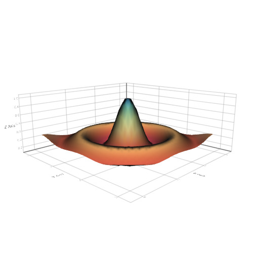
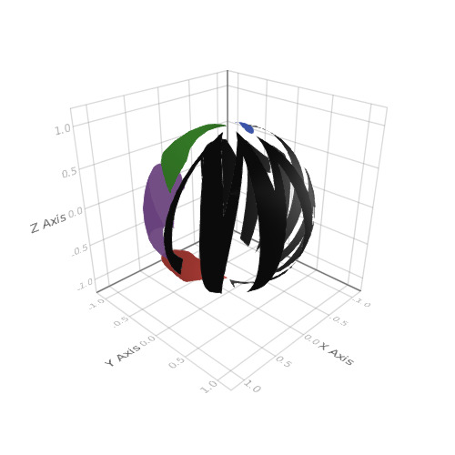
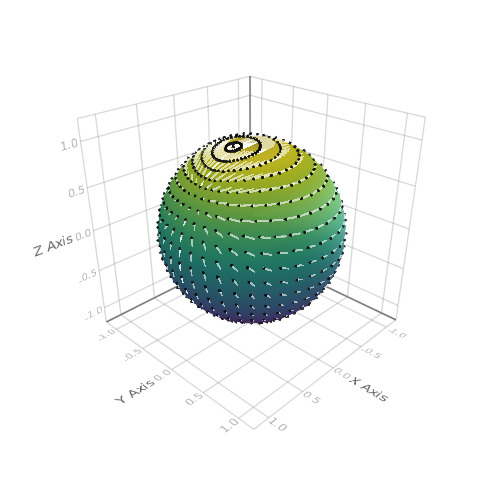
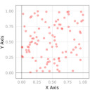
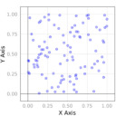
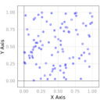
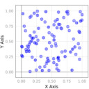

surface
Wireframe of a Surface
Tags: 3d, surface, wireframe.
using Makie
function xy_data(x, y)
r = sqrt(x^2 + y^2)
r == 0.0 ? 1f0 : (sin(r)/r)
end
N = 30
lspace = linspace(-10, 10, N)
z = Float32[xy_data(x, y) for x in lspace, y in lspace]
range = linspace(0, 3, N)
wireframe(range, range, z)

Surface
Tags: 3d, surface.
using Makie
N = 30
function xy_data(x, y)
r = sqrt(x^2 + y^2)
r == 0.0 ? 1f0 : (sin(r)/r)
end
lspace = linspace(-10, 10, N)
z = Float32[xy_data(x, y) for x in lspace, y in lspace]
range = linspace(0, 3, N)
surface(
range, range, z,
colormap = :Spectral
)

Surface with image
Tags: 3d, image, surface.
using Makie
N = 30
function xy_data(x, y)
r = sqrt(x^2 + y^2)
r == 0.0 ? 1f0 : (sin(r)/r)
end
r = linspace(-2, 2, N)
surf_func(i) = [Float32(xy_data(x*i, y*i)) for x = r, y = r]
surface(
r, r, surf_func(10),
color = rand(RGBAf0, 124, 124)
)

Image on Surface Sphere
Tags: 3d, image, sphere, surface.
using Makie
n = 20
θ = [0;(0.5:n-0.5)/n;1]
φ = [(0:2n-2)*2/(2n-1);2]
x = [cospi(φ)*sinpi(θ) for θ in θ, φ in φ]
y = [sinpi(φ)*sinpi(θ) for θ in θ, φ in φ]
z = [cospi(θ) for θ in θ, φ in φ]
rand([-1f0, 1f0], 3)
pts = vec(Point3f0.(x, y, z))
surface(x, y, z, color = Makie.logo())

Arrows on Sphere
Tags: 3d, arrows, sphere, surface.
using Makie
n = 20
f = (x,y,z) -> x*exp(cos(y)*z)
∇f = (x,y,z) -> Point3f0(exp(cos(y)*z), -sin(y)*z*x*exp(cos(y)*z), x*cos(y)*exp(cos(y)*z))
∇ˢf = (x,y,z) -> ∇f(x,y,z) - Point3f0(x,y,z)*dot(Point3f0(x,y,z), ∇f(x,y,z))
θ = [0;(0.5:n-0.5)/n;1]
φ = [(0:2n-2)*2/(2n-1);2]
x = [cospi(φ)*sinpi(θ) for θ in θ, φ in φ]
y = [sinpi(φ)*sinpi(θ) for θ in θ, φ in φ]
z = [cospi(θ) for θ in θ, φ in φ]
pts = vec(Point3f0.(x, y, z))
∇ˢF = vec(∇ˢf.(x, y, z)) .* 0.1f0
surface(x, y, z)
arrows!(
pts, ∇ˢF,
arrowsize = 0.03, linecolor = (:white, 0.6), linewidth = 3
)

surface + contour3d
Tags: 3d, contour3d, subscene, surface.
using Makie
vx = -1:0.01:1
vy = -1:0.01:1
f(x, y) = (sin(x*10) + cos(y*10)) / 4
p1 = surface(vx, vy, f)
p2 = contour3d(vx, vy, (x, y) -> f(x,y), levels = 15, linewidth = 3)
scene = AbstractPlotting.vbox(p1, p2)
text!(campixel(p1), "surface", position = widths(p1) .* Vec(0.5, 1), align = (:center, :top), raw = true)
text!(campixel(p2), "contour3d", position = widths(p2) .* Vec(0.5, 1), align = (:center, :top), raw = true)
scene

Axis + Surface
Tags: 3d, axis, interaction, manipulation, surface.
using Makie
vx = -1:0.01:1
vy = -1:0.01:1
f(x, y) = (sin(x*10) + cos(y*10)) / 4
scene = Scene(resolution = (500, 500))
# One way to style the axis is to pass a nested dictionary / named tuple to it.
surface!(scene, vx, vy, f, axis = NT(frame = NT(linewidth = 2.0)))
psurf = scene[end] # the surface we last plotted to scene
# One can also directly get the axis object and manipulate it
axis = scene[Axis] # get axis
# You can access nested attributes likes this:
axis[:names, :axisnames] = ("\\bf{ℜ}[u]", "\\bf{𝕴}[u]", " OK\n\\bf{δ}\n γ")
tstyle = axis[:names] # or just get the nested attributes and work directly with them
tstyle[:textsize] = 10
tstyle[:textcolor] = (:red, :green, :black)
tstyle[:font] = "helvetica"
psurf[:colormap] = :RdYlBu
wh = widths(scene)
t = text!(
campixel(scene),
"Multipole Representation of first resonances of U-238",
position = (wh[1] / 2.0, wh[2] - 20.0),
align = (:center, :center),
textsize = 20,
font = "helvetica",
raw = :true
)
c = lines!(scene, Circle(Point2f0(0.1, 0.5), 0.1f0), color = :red, offset = Vec3f0(0, 0, 1))
scene
#update surface
# TODO explain and improve the situation here
psurf.converted[3][] = f.(vx .+ 0.5, (vy .+ 0.5)')
scene

Animated surface and wireframe
Tags: 3d, animated, axis, record, surface, video, wireframe.
using Makie
scene = Scene();
function xy_data(x, y)
r = sqrt(x^2 + y^2)
r == 0.0 ? 1f0 : (sin(r)/r)
end
r = linspace(-2, 2, 50)
surf_func(i) = [Float32(xy_data(x*i, y*i)) for x = r, y = r]
z = surf_func(20)
surf = surface!(scene, r, r, z)[end]
wf = wireframe!(scene, r, r, Makie.lift(x-> x .+ 1.0, surf[3]),
linewidth = 2f0, color = Makie.lift(x-> to_colormap(x)[5], surf[:colormap])
)
N = 150
scene
record(scene, "./docs/media/animated_surface_and_wireframe.mp4", linspace(5, 40, N)) do i
surf[3] = surf_func(i)
end
Theming
Tags: documentation, scatter, set_theme, surface, theme.
using Makie
new_theme = Theme(
resolution = (500, 500),
linewidth = 3,
colormap = :RdYlGn,
color = :red,
scatter = Theme(
marker = '⊝',
markersize = 0.03,
strokecolor = :black,
strokewidth = 0.1,
),
)
AbstractPlotting.set_theme!(new_theme)
scene = scatter(rand(100), rand(100))
st = Stepper(scene, "./docs/media/theming")
step!(st)
new_theme[:color] = :blue
step!(st)
new_theme[:scatter, :marker] = '◍'
step!(st)
new_theme[:scatter, :markersize] = 0.05
step!(st)
new_theme[:scatter, :strokewidth] = 0.1
step!(st)
new_theme[:scatter, :strokecolor] = :green
step!(st)
empty!(scene)
scene = scatter!(rand(100), rand(100))
step!(st)
scene[end][:marker] = 'π'
step!(st)
r = linspace(-0.5pi, pi + pi/4, 100)
AbstractPlotting.set_theme!(new_theme)
empty!(scene)
@show scene.theme
scene = surface!(r, r, (x, y)-> sin(2x) + cos(2y))
step!(st)
scene[end][:colormap] = :PuOr
step!(st)
surface!(r + 2pi - pi/4, r, (x, y)-> sin(2x) + cos(2y))
step!(st)
AbstractPlotting.set_theme!(resolution = (500, 500))
empty!(scene)
surface!(r + 2pi - pi/4, r, (x, y)-> sin(2x) + cos(2y))
step!(st)
Step 1
" />
Step 2
" />
Step 3
" />
Step 4
Step 5
Step 6
" />
Step 7
Step 8
Step 9
Step 10
Step 11
Step 12